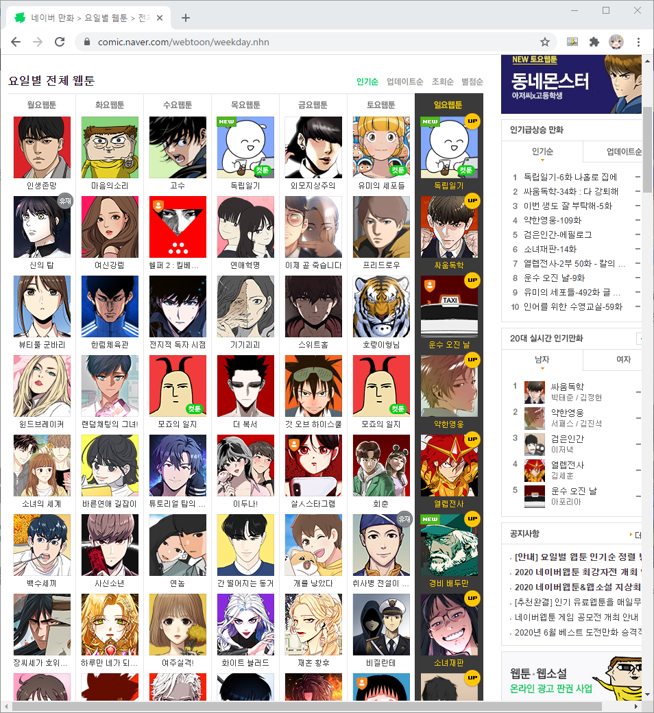
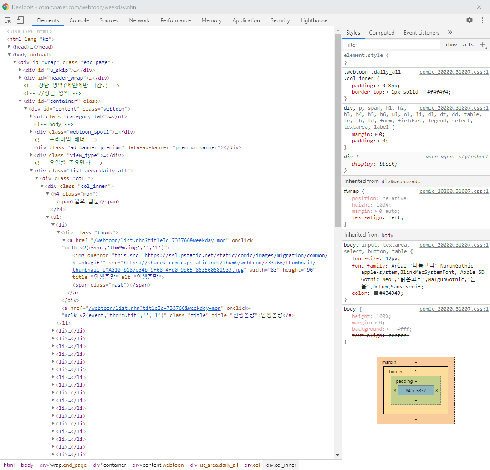
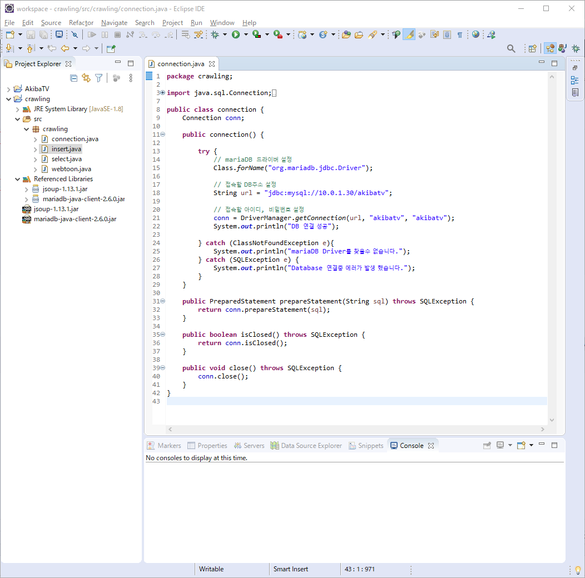
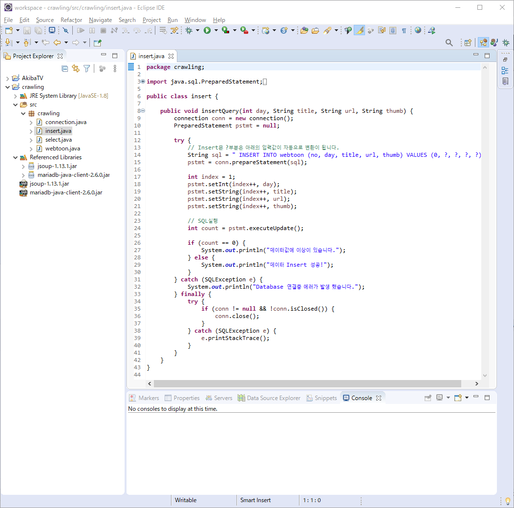
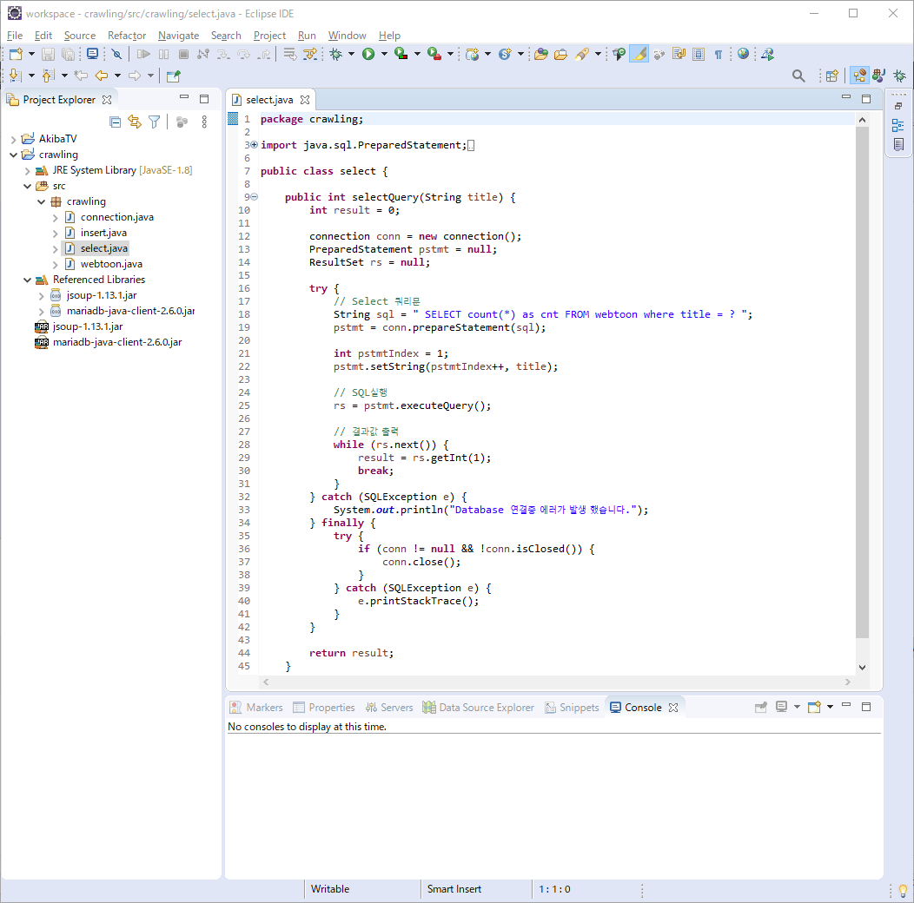
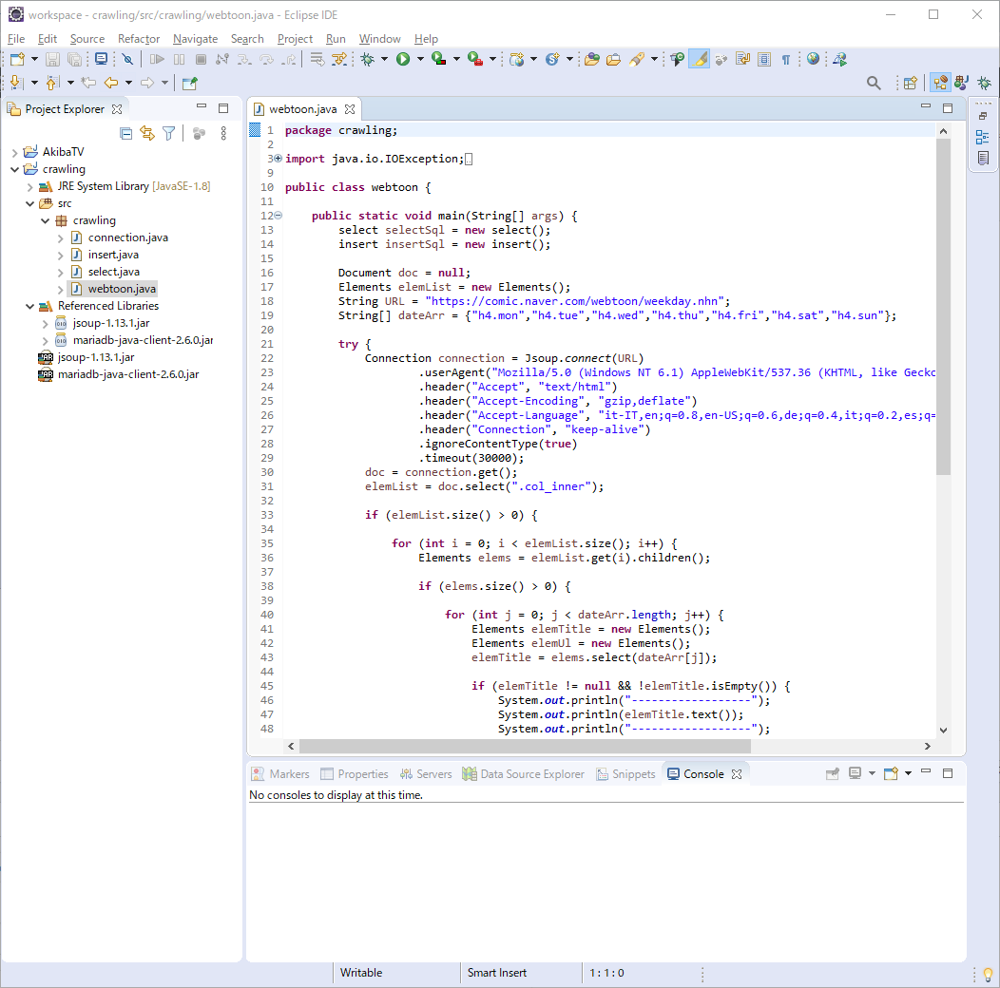
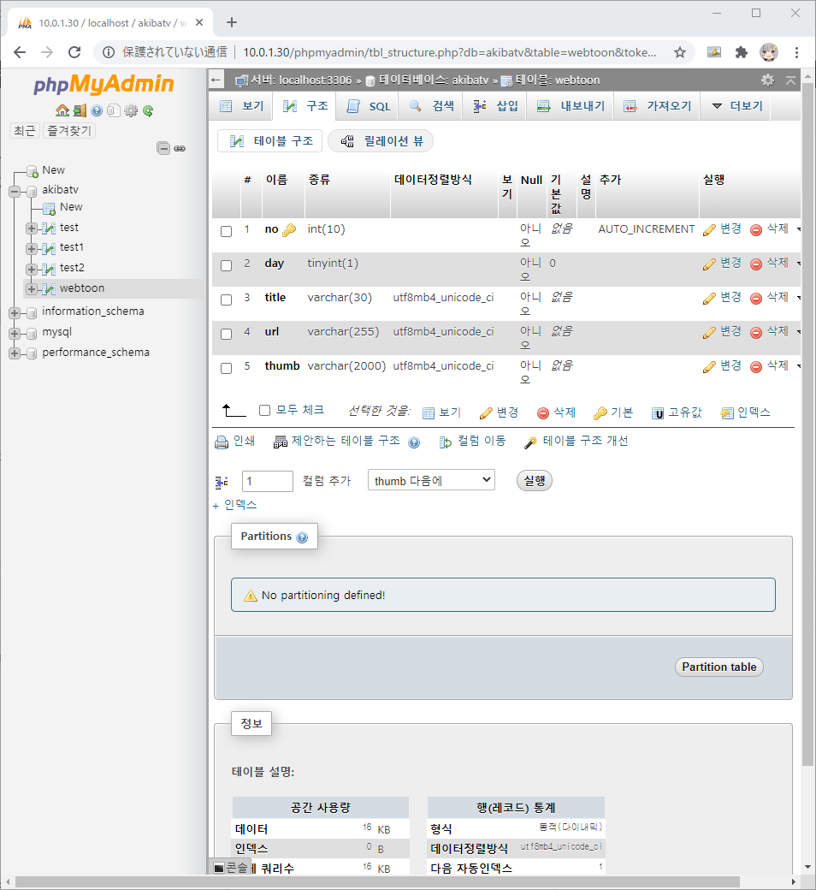
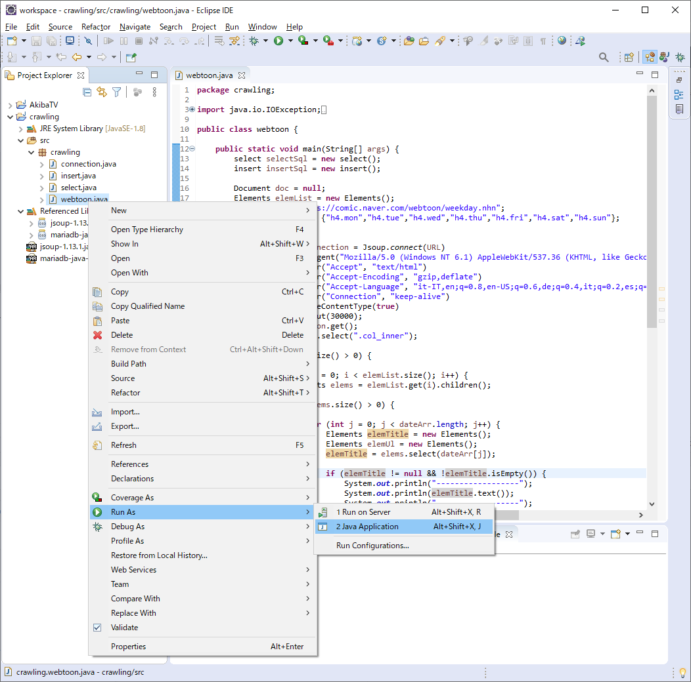
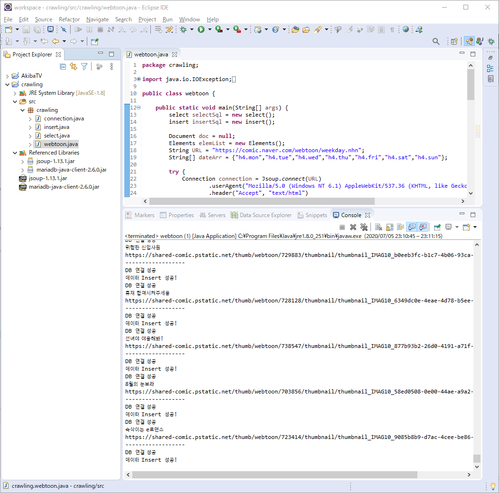
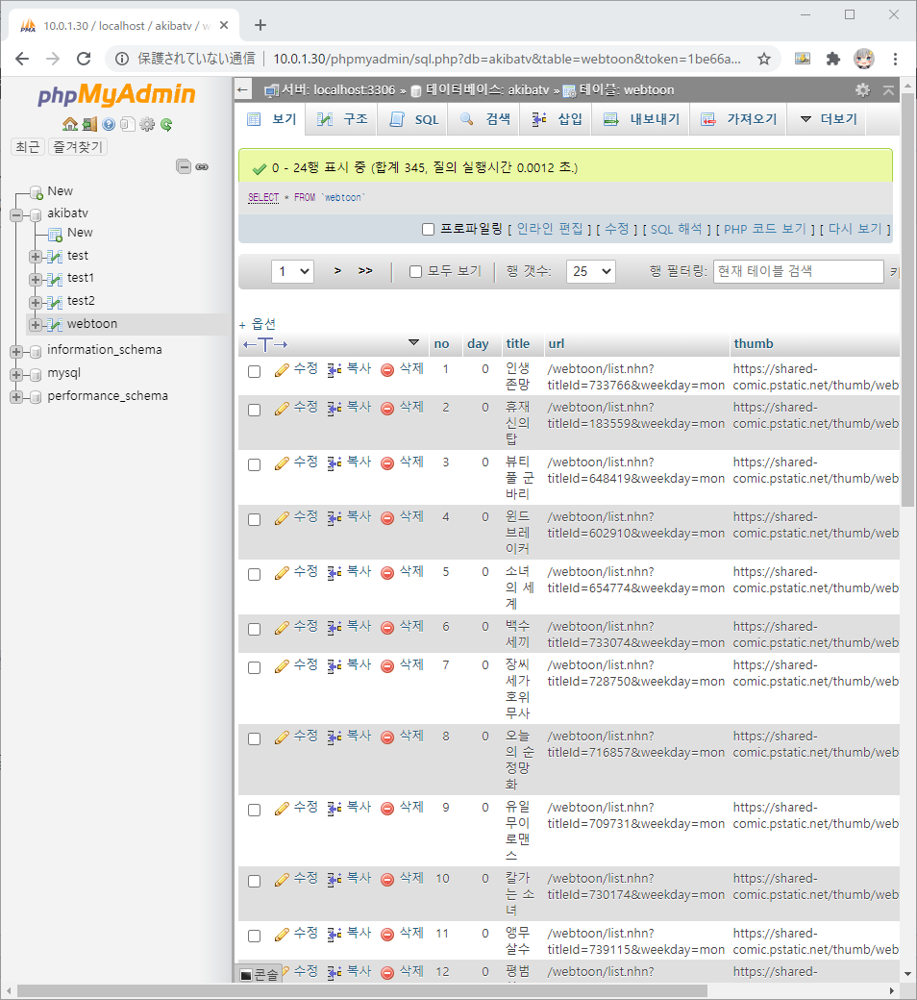

JAVA에서 NAVER 웹툰 크롤링후 DB에 저장하기 안녕하세요. AkibaTV입니다.
이번에 소개할 내용은 JAVA에서 NAVER 웹툰 크롤링후 DB에 저장하기 입니다.
저번의 JAVA에서 JSOUP을 이용한 사이트 크롤링 처리에 이어서
크롤링에 대해서 좀더 다양하게 하는 방법을 알아보도록 하겠습니다.
이클립스를 실행을 하시고 기존에 만든 크롤링 처리 프로젝트에
이어서 클래스와 DB테이블을 생성해서 Insert를 해보도록 하겠습니다.
코딩에 들어가기에 앞서 어떤것을 크롤링 할것인지 설명해 드리도록 하겠습니다.

네이버 웹툰의 요일별 웹툰의 리스트를 추출해서
타이틀, 썸네일, 링크URL을 DB에 저장하도록 하겠습니다.
크롬의 개발자 툴을 실행 하시고 어떤 부분을 크롤링 대상으로 할것인지 확인해 보도록 하겠습니다.

개발자툴을 실행하시고 태그를 확인하시면 월요일의 웹툰 부분을 기준으로 설명 하겠습니다.
1 2 3 4 5 6 7 8 9 10 11 12 13 14 15 # 이부분을 기준으로 클래스명으로 # 크롤링을 하면 요일별로 전부 추출이 가능 합니다. <div class ="col_inner" > # 추출한 리스트에서 요일부분만 # 다시 추출해서 무슨 요일인지 체크후 <h4 class ="mon" > # thumb클래스명을 가진 태그의 # 썸네일 이미지와 URL을 추출 합니다. <div class ="thumb" > # 그다음 마지막으로 # 태그안의 글자만 출력 부분을 추출합니다. <li >
우선 이클립스를 실행해 주시고 아래와 같이 파일들을 추가를 해주시기 바랍니다.
1 2 3 4 5 6 7 8 9 # 추가 자바 클래스 파일 connection.java insert.java select.java webtoon.java # 라이브러리 # 빌드패스에 추가해 주시기 바랍니다. mariadb-java-client-2.6.0.jar
클래스 파일과 라이브러리를 추가를 하셨으면 각 파일에 맞게 아래와 같이 코딩을 해주시기 바랍니다.
##### connection.java
1 2 3 4 5 6 7 8 9 10 11 12 13 14 15 16 17 18 19 20 21 22 23 24 25 26 27 28 29 30 31 32 33 34 35 36 37 38 39 40 41 42 package crawling;import java.sql.Connection;import java.sql.DriverManager;import java.sql.PreparedStatement;import java.sql.SQLException;public class connection Connection conn; public connection () try { Class.forName("org.mariadb.jdbc.Driver" ); String url = "jdbc:mysql://데이터베이스URL/DB명" ; conn = DriverManager.getConnection(url, "아이디" , "비밀번호" ); System.out.println("DB 연결 성공" ); } catch (ClassNotFoundException e){ System.out.println("mariaDB Driver를 찾을수 없습니다." ); } catch (SQLException e) { System.out.println("Database 연결중 에러가 발생 했습니다." ); } } public PreparedStatement prepareStatement (String sql) throws SQLException return conn.prepareStatement(sql); } public boolean isClosed () throws SQLException return conn.isClosed(); } public void close () throws SQLException conn.close(); } }

##### insert.java
1 2 3 4 5 6 7 8 9 10 11 12 13 14 15 16 17 18 19 20 21 22 23 24 25 26 27 28 29 30 31 32 33 34 35 36 37 38 39 40 41 42 43 package crawling;import java.sql.PreparedStatement;import java.sql.SQLException;public class insert public void insertQuery (int day, String title, String url, String thumb) connection conn = new connection(); PreparedStatement pstmt = null ; try { String sql = " INSERT INTO webtoon (no, day, title, url, thumb) VALUES (0, ?, ?, ?, ?) " ; pstmt = conn.prepareStatement(sql); int index = 1 ; pstmt.setInt(index++, day); pstmt.setString(index++, title); pstmt.setString(index++, url); pstmt.setString(index++, thumb); int count = pstmt.executeUpdate(); if (count == 0 ) { System.out.println("데이터값에 이상이 있습니다." ); } else { System.out.println("데이터 Insert 성공!" ); } } catch (SQLException e) { System.out.println("Database 연결중 에러가 발생 했습니다." ); } finally { try { if (conn != null && !conn.isClosed()) { conn.close(); } } catch (SQLException e) { e.printStackTrace(); } } } }

##### select.java
1 2 3 4 5 6 7 8 9 10 11 12 13 14 15 16 17 18 19 20 21 22 23 24 25 26 27 28 29 30 31 32 33 34 35 36 37 38 39 40 41 42 43 44 45 46 47 package crawling;import java.sql.PreparedStatement;import java.sql.ResultSet;import java.sql.SQLException;public class select public int selectQuery (String title) int result = 0 ; connection conn = new connection(); PreparedStatement pstmt = null ; ResultSet rs = null ; try { String sql = " SELECT count(*) as cnt FROM webtoon where title = ? " ; pstmt = conn.prepareStatement(sql); int pstmtIndex = 1 ; pstmt.setString(pstmtIndex++, title); rs = pstmt.executeQuery(); while (rs.next()) { result = rs.getInt(1 ); break ; } } catch (SQLException e) { System.out.println("Database 연결중 에러가 발생 했습니다." ); } finally { try { if (conn != null && !conn.isClosed()) { conn.close(); } } catch (SQLException e) { e.printStackTrace(); } } return result; } }

##### webtoon.java
1 2 3 4 5 6 7 8 9 10 11 12 13 14 15 16 17 18 19 20 21 22 23 24 25 26 27 28 29 30 31 32 33 34 35 36 37 38 39 40 41 42 43 44 45 46 47 48 49 50 51 52 53 54 55 56 57 58 59 60 61 62 63 64 65 66 67 68 69 70 71 72 73 74 75 76 77 78 79 package crawling;import java.io.IOException;import org.jsoup.Connection;import org.jsoup.Jsoup;import org.jsoup.nodes.Document;import org.jsoup.select.Elements;public class webtoon public static void main (String[] args) select selectSql = new select(); insert insertSql = new insert(); Document doc = null ; Elements elemList = new Elements(); String URL = "https://comic.naver.com/webtoon/weekday.nhn" ; String[] dateArr = {"h4.mon" ,"h4.tue" ,"h4.wed" ,"h4.thu" ,"h4.fri" ,"h4.sat" ,"h4.sun" }; try { Connection connection = Jsoup.connect(URL) .userAgent("Mozilla/5.0 (Windows NT 6.1) AppleWebKit/537.36 (KHTML, like Gecko) Chrome/41.0.2228.0 Safari/537.36" ) .header("Accept" , "text/html" ) .header("Accept-Encoding" , "gzip,deflate" ) .header("Accept-Language" , "it-IT,en;q=0.8,en-US;q=0.6,de;q=0.4,it;q=0.2,es;q=0.2" ) .header("Connection" , "keep-alive" ) .ignoreContentType(true ) .timeout(30000 ); doc = connection.get(); elemList = doc.select(".col_inner" ); if (elemList.size() > 0 ) { for (int i = 0 ; i < elemList.size(); i++) { Elements elems = elemList.get(i).children(); if (elems.size() > 0 ) { for (int j = 0 ; j < dateArr.length; j++) { Elements elemTitle = new Elements(); Elements elemUl = new Elements(); elemTitle = elems.select(dateArr[j]); if (elemTitle != null && !elemTitle.isEmpty()) { System.out.println("------------------" ); System.out.println(elemTitle.text()); System.out.println("------------------" ); elemUl = elems.select("ul > li" ); if (elemUl.size() > 0 ) { for (int k = 0 ; k < elemUl.size(); k++) { Elements elemLi = elemUl.get(k).children(); if (selectSql.selectQuery(elemLi.text()) < 1 ) { Elements elemHref = elemLi.select(".thumb > a" ); Elements elemImg = elemLi.select(".thumb > a > img" ); System.out.println(elemLi.text()); System.out.println(elemImg.attr("src" )); System.out.println("------------------" ); insertSql.insertQuery(j, elemLi.text(), elemHref.attr("href" ), elemImg.attr("src" )); } } } } } } } } } catch (IOException e) { e.printStackTrace(); } } }

위와같이 작성을 해서 코딩은 일단 끝났습니다.
이제 데이터베이스에 테이블을 생성을 해야만 합니다.
데이터베이스 관리툴을 실행하신후 아래와 같이 데이터베이스를 추가를 해주시기 바랍니다.
1 2 3 4 5 6 7 8 9 10 11 12 13 14 # 테이블명, 칼럼, 종류, 사이즈등을 설정을 해주시기 바랍니다. ----------+---------+--------+--------+---------------- Name | Type | Size | Default| Add ----------+---------+--------+--------+---------------- no | INT | 10 | | AUTO_INCREMENT ----------+---------+--------+--------+---------------- day | TINYINT | 1 | 0 | ----------+---------+--------+--------+---------------- title | VARCHAR | 30 | | ----------+---------+--------+--------+---------------- url | VARCHAR | 255 | | ----------+---------+--------+--------+---------------- thumb | VARCHAR | 2000 | | ----------+---------+--------+--------+----------------

데이터베이스도 추가가 되셨으면 이클립스에서
webtoon.java를 실행해서 정상 등록 되는지 확인해 보도록 하겠습니다.


자바 프로그램을 실행을 하시게 되시면 위와같이 콘솔창에
DB 연결 성공, 데이터 Insert 성공!이 나오게 되시면 문제없이 되신것 입니다.
이제 실제로 데이터베이스도 데이터가 Insert되었는지 확인해 보도록 하겠습니다.

위와같이 데이터베이스에도 정상적으로 Insert가 된것을 확인이 되었습니다.
다음에는 데이터베이스의 데이터를 이용한 출력에 대해 설명을 해보도록 하겠습니다.